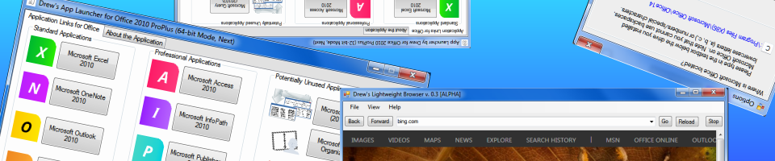

<article class="row">
  <section class="small-12 large-8 page-content">

<p>
<div style="text-align: center"></div>
<br style="clear:both" /></p>

<div style="text-align: center"><h2>Welcome to Drew's Applications!</h2></div>

<div style="text-align: center"><p>This website is home to my App Launcher (for Microsoft Office), which you may or may not have heard of by this point in time.<br>
Before you leave this page, how about you check out my General News blog on this site or go to my main website?<br>
<span style="font-size: large; color: red">I have import information for you to read in this blog post!</span></p></div>


  </section>
</article>